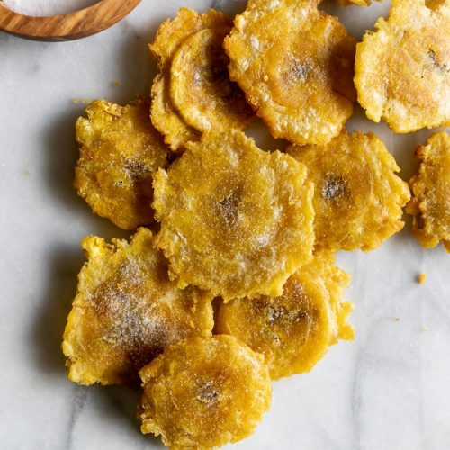

Fried Plantains

Description
The best snack you'll ever eat!
Ingredients
- 1 Plantain, starting to brown
- oil of choice, I prefer avacado oil but any kind will work!
- salt to taste
Steps
- Fill a skillet with 1/2 in of oil, and begin to heat on medium high
- Chop off ends and peel plantains. Then slice diagonally into 3/4 inch slices
- When the oil is hot, place the plantains in. They should bubble immediately, if not, take them out and let the oil get hotter.
- Afer a few minutes, flip the plantains. Fry until both sides are beginning to turn golden brown, then remove from the oil
- Take a small pot and smash the plantain slices until they are flat but not too thin
- Place the smashed slices back in the oil and fry until a dark brown, and remove
- Add salt immediately, then let cool before enjoying!
Back to Recipes!